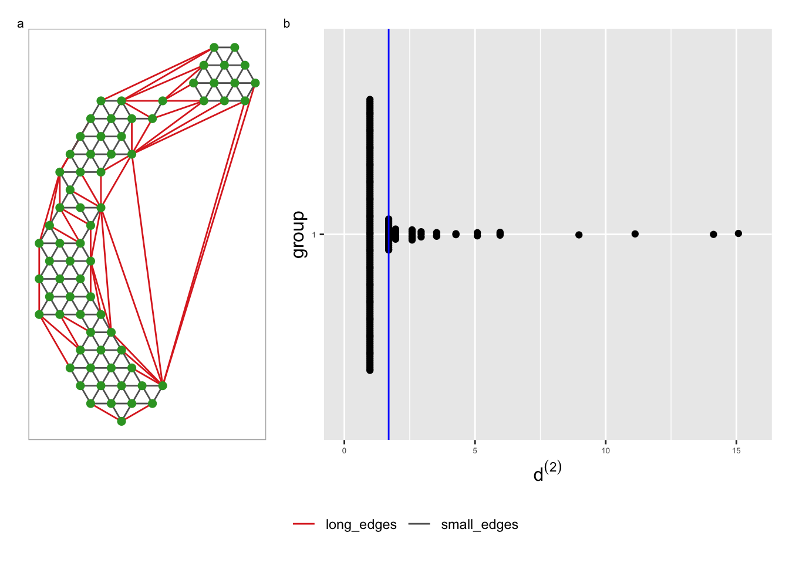
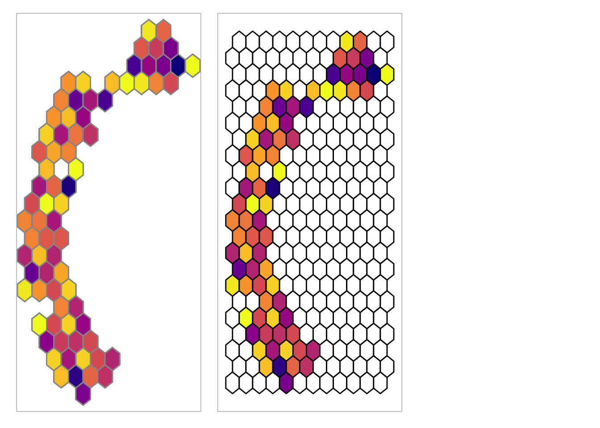
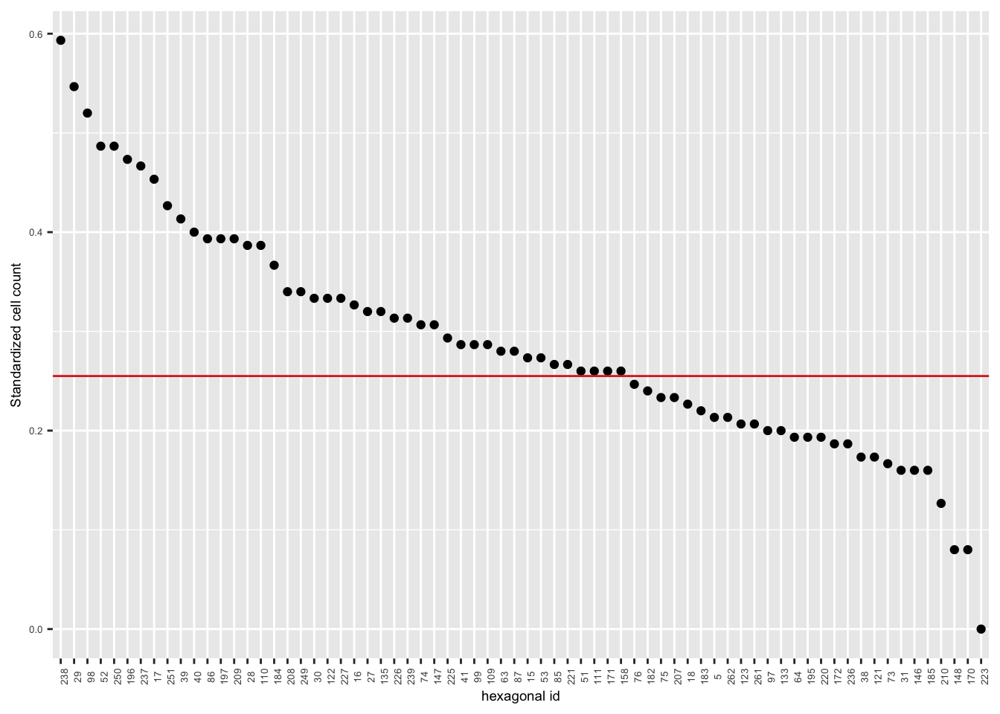
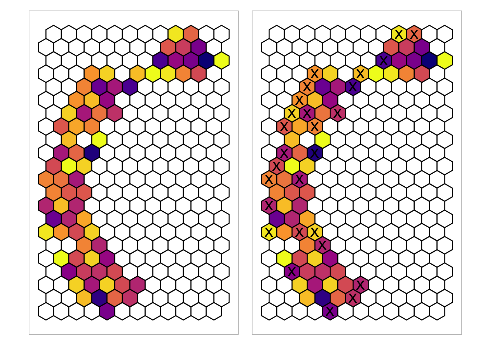
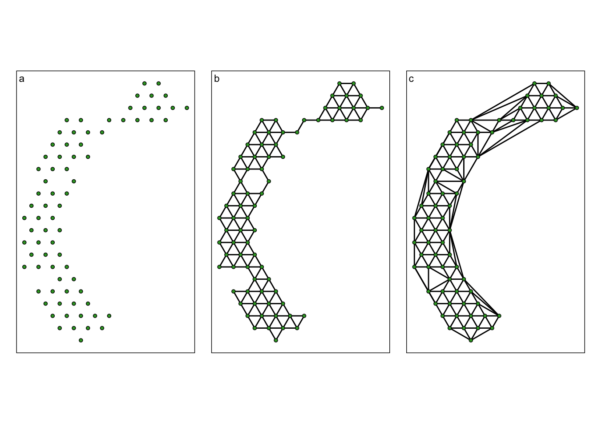
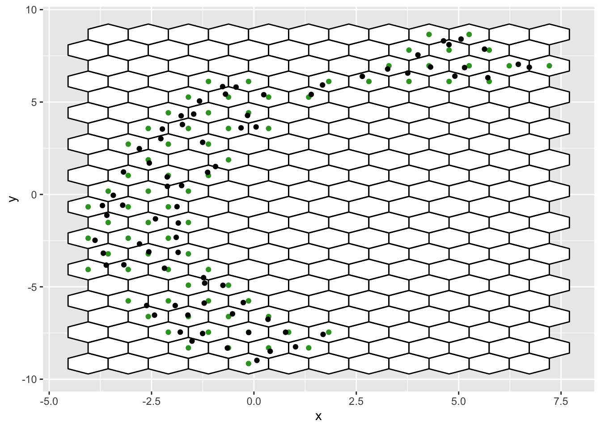
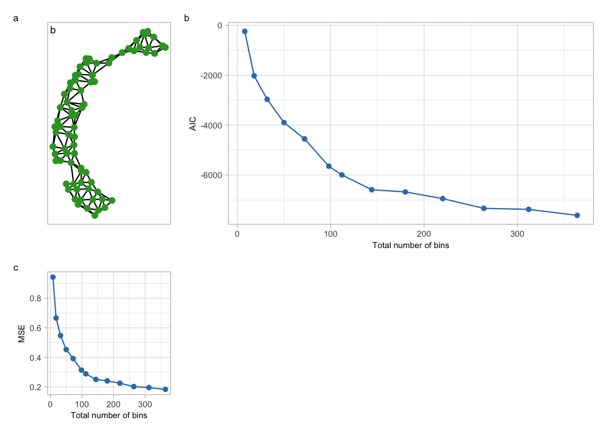
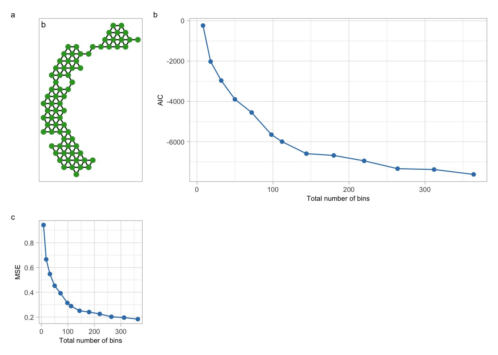

![]()

Appendix: Visualising How Non-linear Dimension Reduction Warps Your Data
Notations
| Notation | Description |
|---|---|
| \(n\) | number of observations |
| \(p\) | number of dimensions in high-D data |
| \(X_{n \times p} = \begin{bmatrix} \textbf{x} _{1} & \textbf{x}_ {2} & \cdots & \textbf{x}_{n} \\ \end{bmatrix}^\top\) | high-D data matrix |
| \(d\) | number of dimensions in embedding data, usually two |
| \(Y_{n \times d} = \begin{bmatrix} \textbf{y} _{1} & \textbf{y}_ {2} & \cdots & \textbf{y}_{n} \\ \end{bmatrix}^\top\) | embedding matrix |
| \(P_t\) | point along the geodesic path at time \(t\) |
| \(P_{t+1}\) | point along the geodesic path at the next time instant, which is \(t+1\) |
| \(b_1\) | number of bins along the x-axis |
| \(b_2\) | number of bins along the y-axis |
| \(b\) | total number of bins in the hexagonal grid |
| \(b'\) | total number of bins without the empty bins |
| \(h\) | diameter of a hexagon |
| \(A\) | area of a hexagon |
| \(r_1\) | 2D embedding component 1 |
| \(r_2\) | 2D embedding component 2 |
| \(s\) | shape parameter |
| \(C_k^{(2)} \equiv (C_{ky_1}, C_{ky_2})\) | hexagonal bin centroid coordinates |
| \(C_k^{(p)} \equiv (C_{kx_1}, ..., C_{kx_p})\) | averaged high-D coordinates |
Default parameter values
Benchmark value to remove low-density hexagons
Removing all the bins that have a standard number of points less than a certain benchmark value will generate unnecessary holes within the triangular mesh. Therefore, before removing the low-density bins, it’s necessary to investigate the number of points in neighboring bins as well.
\[ \text{standard count} = \frac{\text{count}}{\text{max count}} \tag{1}\]
The process begins by identifying the six nearest hex bins of specified low-density hex bins. To identify the nearest hex bins 2D Euclidean distance metric is used. Then, we calculate the mean density, as outlined in the equations:
\[ \text{mean density} = \frac{\text{standard count}}{6} \tag{2}\]
The standard count is derived from the number of observations in the hex bins. By examining the distribution of mean densities and designating the first quartile as the benchmark value, hex bins with mean densities below this benchmark are removed. This process ensures the elimination of regions with insufficient data density, focusing on areas with more significant data representation and preserving the overall structure in the low-dimensional space.
Benchmark value to remove long edges
Determining a benchmark value for removing long edges isn’t a straightforward process with standard guidelines. Having a default value provides a practical starting point for decision-making, helping users choose whether to stick with the default, choose a value below it, or select one above it for long edge removal.
To calculate the default value, the process involves computing the 2D Euclidean distances between the vertices in the triangular mesh. Initially, distances between vertices are sorted. Then, unique distance values are extracted. Following this, the differences between consecutive distance values are computed, and a data frame is constructed with unique distance values and their corresponding differences. The first largest difference is then used as a benchmark to identify and remove the long edges.

Paramter tunning
Total number of bins
The total number of bins represents the overall count of hexagonal bins within the hexagonal grid. This count is determined by multiplying the number of bins along the x-axis (\(b_1\)) with the number of bins along the y-axis (\(b_2\)), according to the formula:
\[ b = b_1 \times b_2 \tag{3}\]
Here, \(b\) denotes the total number of bins. By adjusting the parameter \(b_1\), we have control over the total number of bins (\(b\)). Hence, fine-tuning \(b_1\) enables us to customize and optimize the total bin count based on the desired configuration along the x-axis.

Benchmark value to remove low-density hexagons
Addressing low-density hexagons is a systematic process to handle sparsely represented data in certain regions. For each hex bin, we identify the six nearest hex bins using an equal 2D distance metric. Then, we calculate the mean density, as outlined in the equations:
\[ \text{standard count} = \frac{\text{count}}{\text{max count}} \tag{4}\]
\[ \text{mean density} = \frac{\text{standard count}}{6} \tag{5}\]
The standard count is derived from the number of observations in the hex bins. By examining the distribution of mean densities and designating the first quartile as the benchmark value, hex bins with mean densities below this benchmark are removed. This process ensures the elimination of regions with insufficient data density, focusing on areas with more significant data representation and preserving the overall structure in the low-dimensional space.

Joining with `by = join_by(hexID)`
Benchmark value to remove long edges
Creating a smooth surfaces in 2D involves experimenting with various benchmark values. The challenge lies in determining the most effective benchmark value. This is precisely why the default value was introduced, as outlined in Section 2.2, serving as a fundamental reference. To assess its effectiveness, a visual inspection of the triangular mesh is conducted to verify whether it successfully eliminates long edges. If it does, proceeding with that value is a effective choice; if not, it signals the initiation of the tuning process. Figure 3 shows how the 2D triangular meshes look after removing long edges with different benchmark values. Higher values tend to retain long edges, while lower values may remove not only long edges but also shorter ones.

Different options to construct the 2D model and lift the model into high-D space
Mainly, the hexagonal bin centroids are used to construct 2D model and averaged high-D data is used to lift the model into high-D space. As options except bin centroids, bin means can used to construct the 2D model. Also, except averaged high-D data, weighted mean can used to lift the model into high-D space. If we use bin centers instead of bin centroids, the triangles are not regular.
- Why bin means? because the distribution of points within hexagonals are not always represented by the center.
Case 1: Construct 2D model with hexbin means and lift the model into high-D space with averaged high-D data


Case 2: Construct 2D model with hexbin centroid and lift the model into high-D space with weighted mean of high-D data
